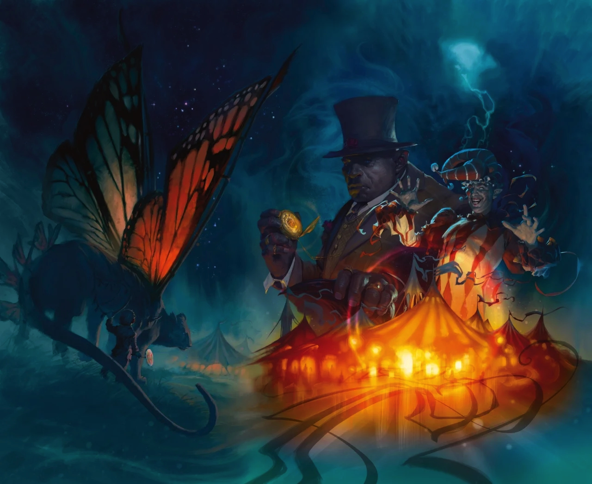
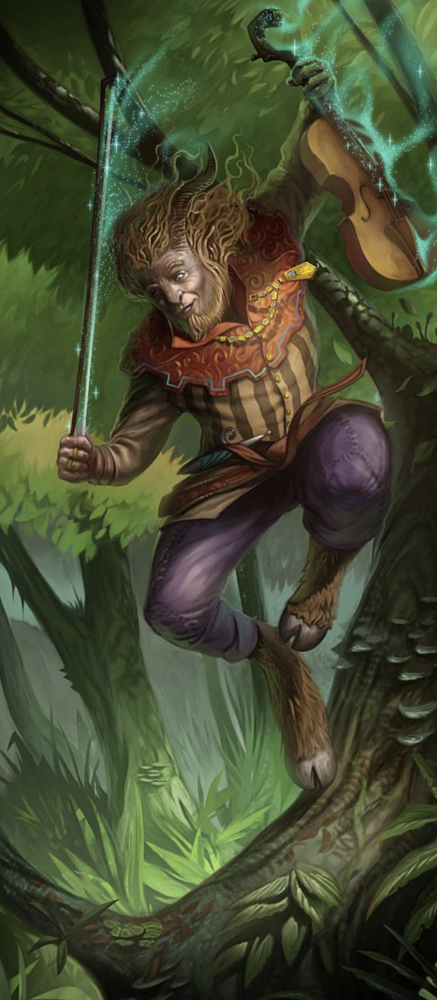

The Feywild is a parallel plane of wild magic and untamed nature — an echo of the material world turned up to eleven. The laws of science, logic, and reason give way to story, rhyme, and emotion. Enchanted forests stretch endlessly, animals talk, castles perch on mountain spires, and time flows differently depending on where you stand.
It is simultaneously a land of breathtaking beauty and terrible danger. Capricious fey play careless games with mortal lives. Hags place everlasting curses. Fomorian tyrants rule underground empires of cruelty. The one consistency: the Feywild is shaped by the emotions of its creatures. Strong feelings can turn a dead tree living, a clear sky to rain. Residents understand this and use emotion to influence the land — intentionally or not. Even a singing mushroom leading you down a forest path might be herding you towards its poisonous brethren.
The fundamental division in fey society is between the Seelie and Unseelie — two overarching courts to which most fey owe allegiance. This isn't a faction you join so much as a disposition you're drawn to. A feywild town, a wandering prince, a dryad grove — almost everything in the Feywild flies one banner or the other.
| Court | Nature | Ruler |
|---|---|---|
| Seelie | The Summer Court. Drawn to laughter, music, merriment, beauty. Joyful. More likely to seem good — but "seeming good" and "being good" are very different things in the Feywild. Membership is exclusive: typically limited to pure fey creatures. Courtiers gain status by hosting parties and presenting gifts to the queen. Those with mixed blood are viewed as repellent. | Queen Titania (+ Oberon as consort in some sources) |
| Unseelie | The Gloaming Court. Dark, melancholy, mysterious, star-touched. More likely to appear evil, but not inherently so. The Queens are sisters — this is a family feud, not a cosmic war of good vs. evil. Unlike the Seelie, the Unseelie accept anyone with even a drop of fey heritage — those rejected by the Summer Court often find a place to belong here. | Queen of Air & Darkness |
The words themselves come from old Scots/English — "seelie" means happy or blessed, "unseelie" means unhappy or unblessed. Think joyful vs. melancholy rather than good vs. evil. A seelie fey might charm you into dancing until your feet bleed because it's fun. An unseelie fey might shelter you from a storm out of cold obligation. Neither is safe. Tales Arcane One further wrinkle: fey creatures don't necessarily use these terms themselves. "Seelie" and "Unseelie" may be material-plane labels — shorthand mortals use to sort trustworthy-seeming fey from untrustworthy-seeming ones, which is a distinction the fey themselves find irrelevant. Taking20
Heroes of the Feywild breaks fey allegiances into more granular factions. These exist within the Seelie/Unseelie framework — or across it, or sideways to it, depending on which edition you ask.
| Faction | Nature | Key Figures | Court? |
|---|---|---|---|
| Court of Stars | Grand conclave hosted by the Summer Queen. Part politics, part revelry, part competition. The closest thing the Feywild has to a parliament. | Tiandra, Oran, Hyrsam | Seelie |
| Summer Fey | Embody beauty and power. Largest Sidhe following. Eladrin, nymphs. | Tiandra, the Summer Queen | Seelie |
| Green Fey | Forest-dwelling servants of Oran the Green Lord. Hamadryads, satyrs, elves. | Oran the Green Lord | Seelie |
| Winter Fey | Bound to ice and cold. No true leader — loosely grouped under the Prince of Frost. | Prince of Frost | Unseelie-adjacent |
| Gloaming Fey | Dreams, darkness, stars, twilight, dusk. Owe allegiance to various archfey. In 5e this maps roughly to the Unseelie court; in 4e it's more its own thing. | Maiden of the Moon | Unseelie (5e) / ambiguous (4e) |
| Court of Coral | Aquatic and island-dwelling fey. Rivers and seas. Largely outside the Seelie/Unseelie binary. | Elias & Siobhan Alastai (Sea Lords) | Independent |
HotF p. 12
| City | Description | Ref |
|---|---|---|
| Astrazalian | City of Starlight. Crystal towers on an island. Crown jewel of the eladrin — appears in the mortal world in spring and summer, retreats to the Feywild in autumn. Besieged by fomorians annually. | p. 10 |
| Mithrendain | Autumn City. Fortress of towering trees, copper and gold. Time drifts — no clocks, no hurry. Timekeeping devices are considered ill fortune. | p. 11 |
| Shinaelestra | The Fading City. Appears in the Feywild at night, emerges in the mortal Howling Forest by day. Fights nightly fomorian incursions. Valiant, scrappy people. | p. 11 |
| Cendriane | Abandoned ruin in a cursed forest. Crystal towers like skeletal fingers. No birdsong, no life — the silence never breaks. Giant spiders and specters haunt the mansions where eladrin once lived. | p. 14 |
| Location | Description | Ref |
|---|---|---|
| Senaliesse | Summer Queen's demesne. Palace woven from silver trees. Eternal summer, orchids, roses. Where the Court of Stars gathers. | p. 12 |
| Vale of Long Night | Prince of Frost's domain. Frozen night, glacial fortress, ever-full moon. His heart turned to ice when his love betrayed him for a mortal hero. | p. 13 |
| Maze of Fathaghn | Living labyrinth of trees and brambles. Protects the Mother Tree that gave life to the first Green Fey. Ruled by the dryad queen Fathaghn. | p. 17 |
| The Murkendraw | Sea-sized swamp. Poisonous fog, assassin vines, feymire crocodiles. Hags like Baba Yaga love it here. Cold iron knives under every door. | p. 17 |
| Isle of Dread | Tropical island with obsidian beaches. Shifts between the Feywild and random mortal time periods. Castaways form tribes. Few leave. | p. 15 |
| Nachtur | Goblin kingdom ruled by the Great Gark. Gray badlands, fissures, raids. Goblins steal fey creatures and children. | p. 18 |
The Feywild's Underdark — a vast underground tangle of magic-saturated caverns, far more colourful than its mortal equivalent, with abundant water and enormous multicoloured mushrooms. Home to fomorians (the greatest organised threat), their cyclops servants, myconids, and creatures driven underground by the archfey. Three fomorian city-states: Harrowhame, Mag Tureah, and Vor Thomil, each ruled by a different twisted giant. The Feydark has its own fey crossings — drow have been known to use them for covert surface raids. HotF p. 10 Jorphdan
Archfey are the most powerful beings in the Feywild — fey creatures who have accumulated enough magic to rival gods. Their personal domains (demesnes) reflect their nature — literally. The landscape around an archfey shifts to match their mood and personality, like a mood ring the size of a kingdom. Warlocks can make pacts with archfey as patrons. The PHB lists five as examples. Note how the Seelie/Unseelie alignment cuts across individual archfey rather than defining them — most lean one way, but "lean" is doing heavy lifting. Jorphdan
| Archfey | Title / Domain | Court | Notes |
|---|---|---|---|
| Tiandra | Summer Queen | Seelie | Rules Senaliesse. Commands the Court of Stars. Most powerful by political influence. The Seelie court is her court. |
| Oran | The Green Lord | Seelie | Hyrsam's father. Loftiest of nature archfey. Controls the Green Fey. |
| Hyrsam | Prince of Fools | Neither (anarchist) | Oran's eldest son. Wants all courts destroyed. See deep section below. |
| Prince of Frost | Unseelie-adjacent | Unseelie-ish | His heart froze when his love betrayed him. Rules the Vale of Long Night. 4e places him outside the Gloaming Fey; 5e tends to lump him Unseelie. Pick your edition. |
| Queen of Air & Darkness | Gloaming / Unseelie Queen | Unseelie | Titania's sister, corrupted by a mysterious black diamond. The Unseelie court is hers. In 4e the "Gloaming Fey" and her court are ambiguously related; in 5e they're the same thing. |
| Oberon | The Green Lord (alt) | Seelie | Sometimes conflated with Oran depending on setting. Shakespearean import. |
PHB 2014 p. 109 HotF pp. 12–13 Dragon 422 p. 4

Hyrsam is one of the most ancient fey creatures in existence — the eldest son of Oran the Green Lord. He remembers the earliest days of the Feywild, before Corellon and the other gods discovered it, before the fomorians held dominion, before elves, eladrin, or drow existed. In those primordial days the Feywild was a brutal but beautiful realm where gnomes, satyrs, dryads, and treants frolicked unfettered by the structures of court or church. Dragon 422 p. 4
In public, Hyrsam plays the consummate bon vivant — the Court of Stars' resident jester, travelling from court to court with his entourage of musicians and minstrels, entertaining fey nobles. He oscillates between comedy and savagery, and the fool act is entirely deliberate. He is both clever and erudite, with a deep understanding of how to manipulate others. His father Oran actively refutes rumours about Hyrsam's involvement in the fall of various kingdoms — but only because Hyrsam is careful enough to keep his hands clean. Dragon 422 p. 4
Hyrsam is a fey anarchist. He seeks the complete collapse of all fey kingdoms so that the Feywild returns to its original pristine state — wild, untamed, and free of the "corruption" of civilisation, Seldarine influence, and fomorian tyranny alike. His songs sow the seeds of rebellion wherever he goes. His revelers offer clandestine assistance to rebels and traitors. Many kingdoms have collapsed in the wake of his visits. Dragon 422 pp. 4–6
A handsome satyr with curly locks that fall in wild tangles around curved spiral horns. His dark eyes flash with hidden passion and rebellious light. He dresses in ordinary travelling clothes among commoners and in regal finery among nobles — always adapting to his audience. Dragon 422 p. 4
Hyrsam has invented numerous musical instruments, magical and mundane. His signature items are a magic fiddle (woven with mithral strands, playable with any handheld object), a fiddlestick (enchanted bow that doubles as a rapier in combat — stronger than steel, sharper than glass), and a Horn of Revelry (conjures spectral satyr musicians). He also plays the syrinx (pan flute). Dragon 422 p. 8
Hyrsam's court is a travelling menagerie. Satyrs and their dark cousins (satyrs of the night) form the majority, but his retinue also includes dryads, lamia, eladrin, drow, gnomes, fomorians, and outsiders from distant planes — renegade genasi, githyanki, dwarves, humans, halflings. He welcomes everybody, regardless of race or alignment. The only requirements: a sincere love of the Feywild, a talent for music or storytelling, and a willingness to set aside the prejudices of your former life. Dragon 422 p. 5
Revelers pledge their lives to protect the Satyr Prince. Their hair is tousled, their eyes have a manic gleam, and magical music surrounds them even when they're not playing. They can suppress this effect when stealth is needed. CHA 18+ required — Hyrsam can boost a recruit's Charisma if they fall short. Dragon 422 p. 6
Hyrsam's home base is a gargantuan tree with eight wooden platforms strung between its branches — glowing lanterns, never-ending kegs of wine, and tents for resting between days of partying. The grove moves with him. It is less a court and more a perpetual festival that happens to have a political agenda.
Legend holds that Hyrsam was born from the very first notes of music. He is effectively immortal — if killed, he reappears elsewhere in the Feywild at the next dawn or dusk. The only way to ensure his permanent death: deafen him at the moment he dies. Dragon 422 p. 5
The jester has a darker side. Hyrsam remembers the Feywild as a place of savage beauty — when legendary beasts roamed freely before the fomorians and gods drove them to the farthest reaches. He knows the songs that can soothe and control these ancient creatures, and occasionally unleashes them on unsuspecting castles and fortifications, reducing them to rubble. Dragon 422 p. 5
Dragon 422 provides several adventure hooks for incorporating Hyrsam into a campaign: as a revolutionary fomenting rebellion, as a thief who stole Tiandra's crown and fled into the Maze of Fathaghn (forcing the party to broker a deal), or as an unlikely companion against a mutual enemy. The article also includes backstory suggestions for player characters with Hyrsam connections — protégé, displaced heir, believer who heard his songs as a child. Dragon 422 pp. 5–6
Dragon 422 provides a full 4e stat block — Level 23 Elite Skirmisher (Leader), CHA 27, with abilities like Hyrsam's Song (aura 5, allies can save, enemies can't act), Irresistible Dance (burst, charm/psychic/thunder, daze), and Music Never Dies (teleport + full heal when dropped to 0 HP). Not directly usable in 5e but gives a sense of his power tier and combat style. Dragon 422 p. 5
{kind=link}